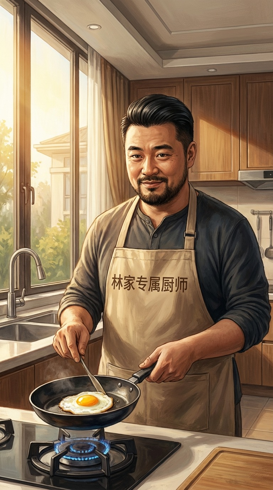
【中景·平拍】高档别墅厨房，早晨七点，阳光透过落地窗洒进来。
江辰穿围裙在做早餐，动作熟练地翻着煎蛋。围裙上印着"林家专属厨师"——岳母送的。
三个月前我管理200人的团队，现在我管理三个煎蛋的火候。说实话，煎蛋的KPI反馈更快。
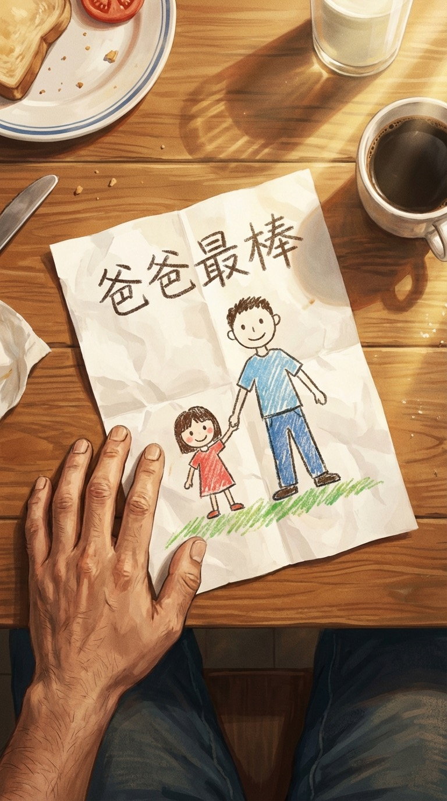
【特写·俯拍】餐桌上，一幅5岁小女孩画的蜡笔画——大人牵着小人，歪歪扭扭写着"爸爸最棒"。
江辰的手轻轻碰了一下画的边角。
小鱼画的。这是我每天早起做饭的全部理由。
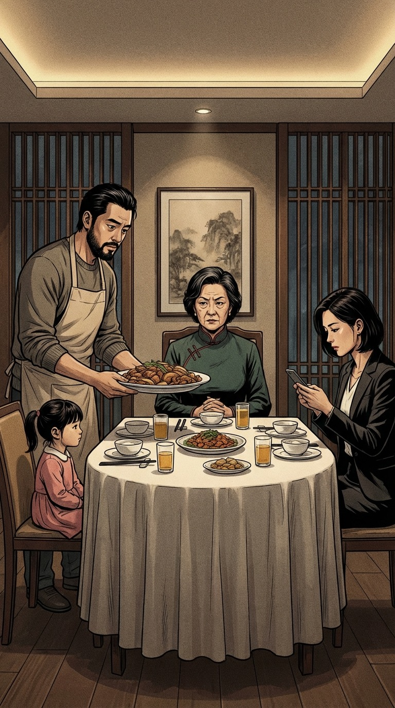
【全景·平拍】餐厅。岳母林淑芬坐主位，妻子林若兰在看手机，小鱼坐在江辰旁边。
江辰端着盘子上菜，岳母看都没看他。
岳母："若兰，今天下午集团季度会议，张总那边的合作方案你准备好了吗？"
林若兰："妈，我在看。"
完全无视江辰的存在。
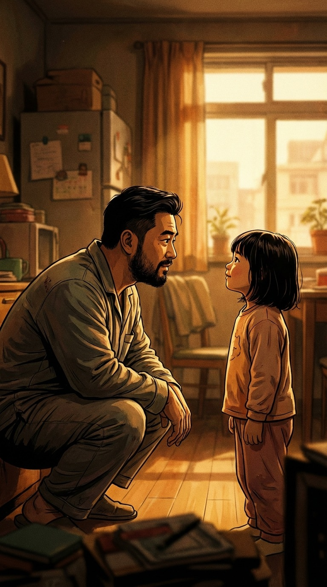
【中景·侧拍】小鱼拉着江辰的手，仰头看爸爸，眼睛亮晶晶的。
小鱼："爸爸，今天煎蛋好好吃！"
江辰："那是因为爸爸用了秘密算法——先用数据分析了你最喜欢的熟度。"
小鱼："什么是数据分析？"
江辰："就是……用心记住你喜欢什么。"
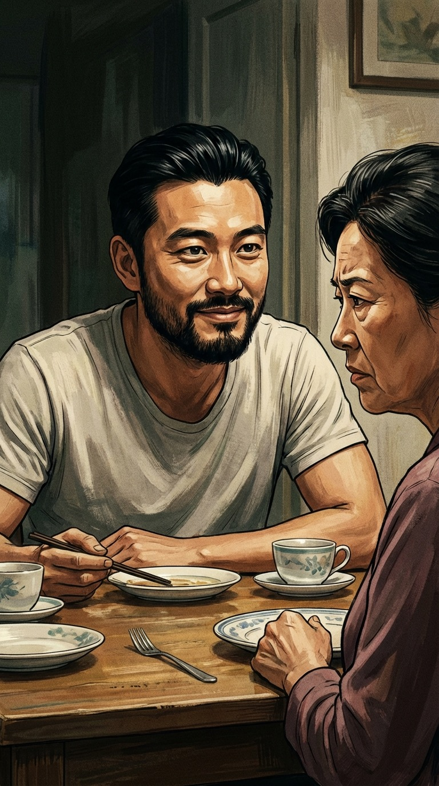
【中景·平拍】餐桌。江辰微笑，表情平和但眼神坚定。
江辰："谢谢妈，我现在最重要的工作是把小鱼照顾好。"
岳母（皱眉）："男人不能没有事业。"
她说得对。但她不知道的是，我的"事业"从来没有停止过——只是战场换了。
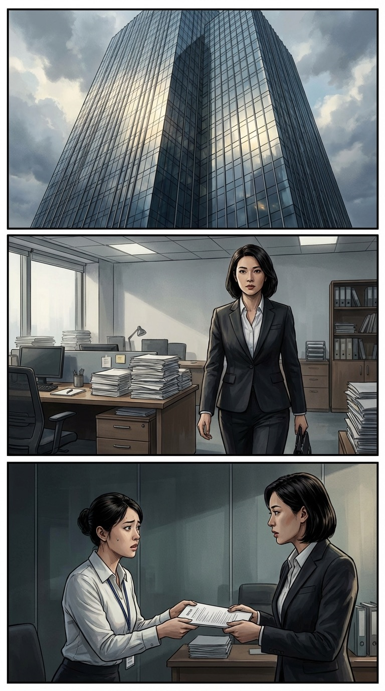
【远景推至中景】林氏集团大楼，现代玻璃幕墙。林若兰走进办公室，桌上堆着文件。
秘书："林总，张氏那边把报价又提高了15%，说是'技术壁垒附加费'。"
林若兰："……又涨？"
【特写·平拍】手机屏幕上一条微信消息——
张远："若兰总，这个价格已经是友情价了。你们要是不做，恒达集团那边排着队呢😊"
友情价？你这是在敲竹杠。
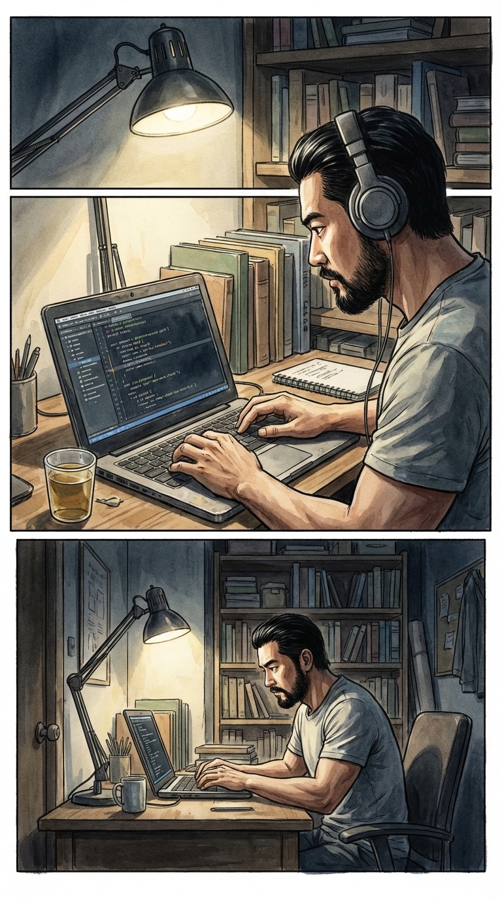
【中景·平拍】家里。储物间改的书房，一台旧笔记本，屏幕上是代码编辑器。江辰戴着耳机专注地写代码。旁边一杯凉透的茶。
三个月了。白天当厨师、司机、保姆；晚上10点到凌晨2点，是我的真正工作时间。这个AI仓储调度系统，是我用前公司的核心算法重写的——当然，合伙人拿走的只是代码，算法思路在我脑子里。
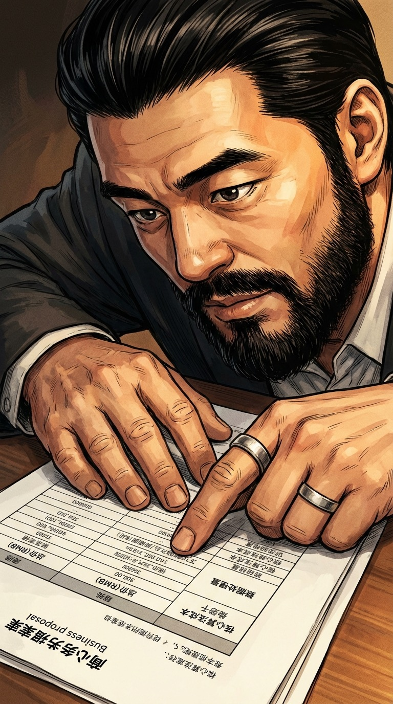
【特写·俯拍】江辰的手翻开报价方案，手指停在一个技术参数上。
调度延迟200ms？这是2020年的技术水平。我的算法能做到15ms。但现在不是出手的时候——我需要先搞清楚，张远为什么能拿到林氏的独家供应商资格。这不像正常商业逻辑。
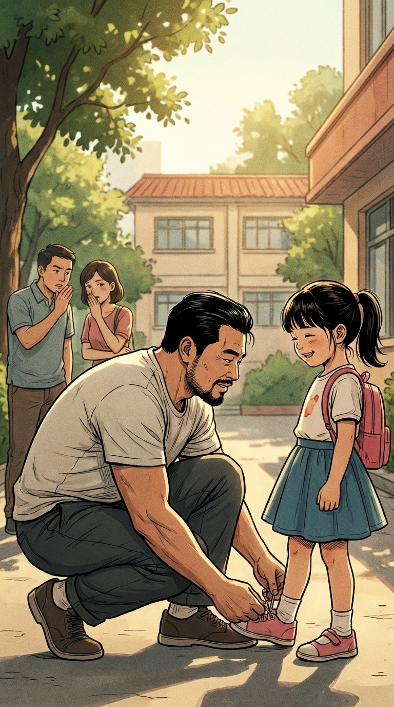
【中景·平拍】幼儿园门口，下午放学。江辰蹲在地上给小鱼系鞋带。旁边两个家长窃窃私语。
家长A（小声）："那就是林家的赘婿吧？听说原来开公司的，破产了。"
家长B："啧，大男人每天接孩子……"
破产的定义取决于你怎么定义资产。我失去了公司、股权、社会地位。但我保留了算法、判断力、还有这个叫我爸爸的小人。ROI来看，不亏。
【全景·仰拍】林氏集团会议室，大落地窗外城市天际线。投影上显示"Q3业绩下滑12%"。
岳母："数字化转型三年了，投了两千万，效率还在降。若兰，你给我一个解释。"
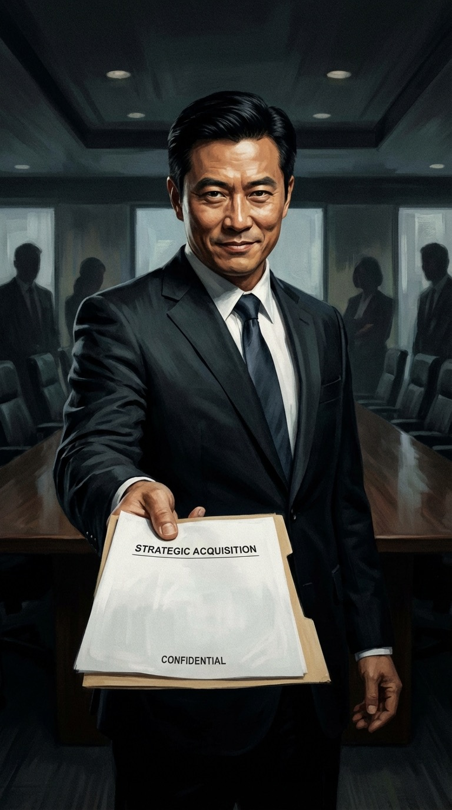
【中景·平拍】副总裁赵凯站起来，西装革履，自信地翻开文件。
赵凯："董事长，我倒是有个建议。张氏科技的智能仓储方案虽然贵了点，但技术成熟。与其自己折腾，不如交给专业的来。"
（画外音）这单子我拿了张远15%的回扣。
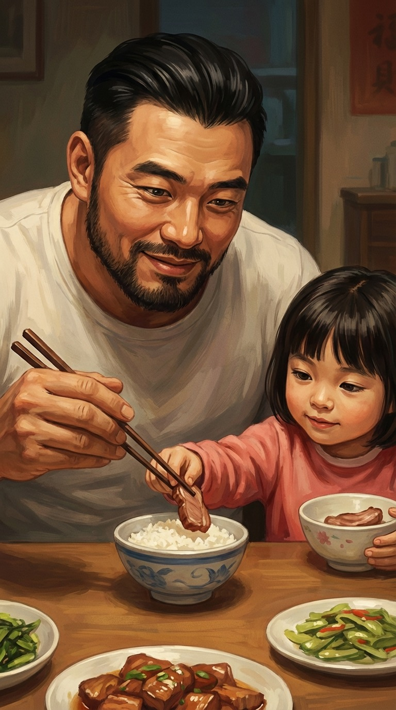
【特写·平拍】餐桌上。江辰面带微笑，平静地嚼着。小鱼偷偷把自己碗里的肉夹给爸爸。
岳母说的也不算错。只是她不知道，"有本事的老公"正在吃她做的红烧肉。说实话，她红烧肉做得比她评估人才的眼光强多了。
【远景·俯拍鸟瞰】深夜。整栋别墅只有书房一盏灯亮着。
每个赘婿都有两个人生。白天的那个，是给别人看的。深夜的这个，才是真的。
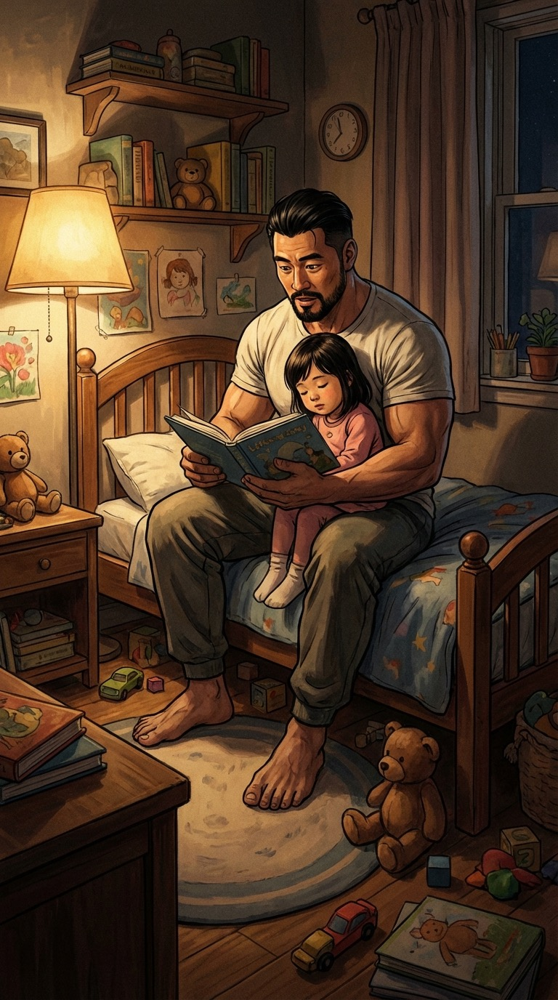
【中景·平拍】小鱼的房间。江辰给小鱼讲睡前故事，小鱼靠在爸爸怀里快睡着了。
小鱼："爸爸，为什么奶奶不喜欢你？"
江辰（愣了一秒）："奶奶不是不喜欢爸爸，奶奶只是……还不了解爸爸。就像你第一天去幼儿园，也不喜欢坐在你旁边的小朋友，后来不是变成好朋友了吗？"
小鱼："那你要让奶奶了解你呀。"
江辰："……会的。等时机到了。"
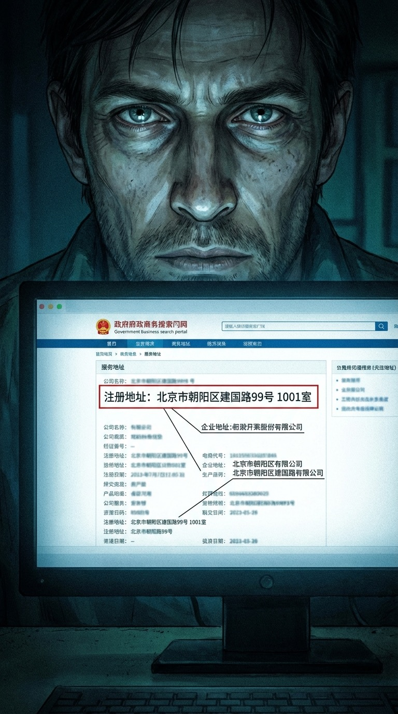
【特写·平拍】电脑屏幕：工商信息查询——赵凯持股30%的某科技公司，与张氏科技同一注册地址。截图保存。
黑客最基础的技能：顺着一个IP找到整个网络。赵凯这条线能拉出多少人？先别急——数据还不够。创业教会我最重要的一课：过早行动和不行动一样致命。
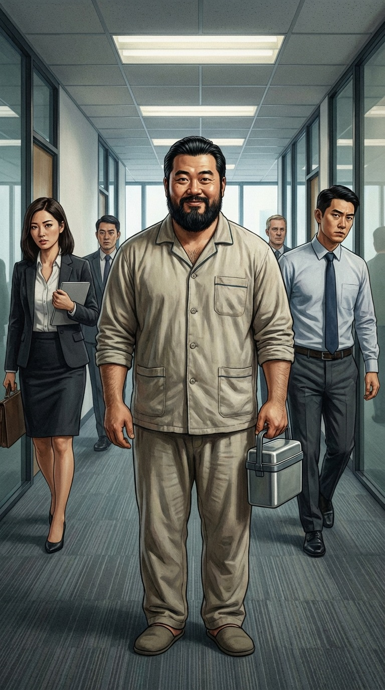
【全景·平拍】第二天。江辰破天荒地来公司"送饭"。提着保温饭盒走在走廊里，路过的员工投来异样目光。他微笑点头。
员工A（小声）："赘婿来送饭了……"
员工B："真够卑微的。"
送饭是假，看看赵凯办公室在哪是真。顺便观察一下这栋楼的网络架构——IT机房在三楼东侧，安全措施……基本等于没有。
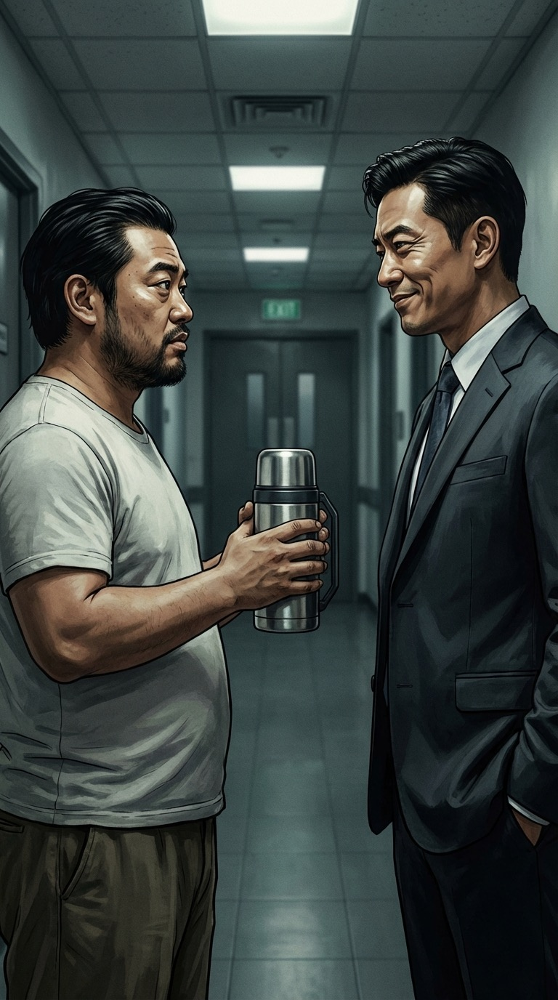
【中景·侧拍】走廊。江辰憨厚地举起保温饭盒，赵凯露出轻蔑的笑。
江辰："赵总说得对，互联网确实卷。我现在研究厨艺呢，您要不要尝尝？今天做的是红烧排骨，秘诀是先用冷水下锅。"
赵凯（笑）："哈哈，不用不用。你忙。"
（走远后）他办公室门牌号：1208。电脑应该是联想ThinkPad，外接了一个移动硬盘——这个人做事不够细致。和他的回扣方案一样。
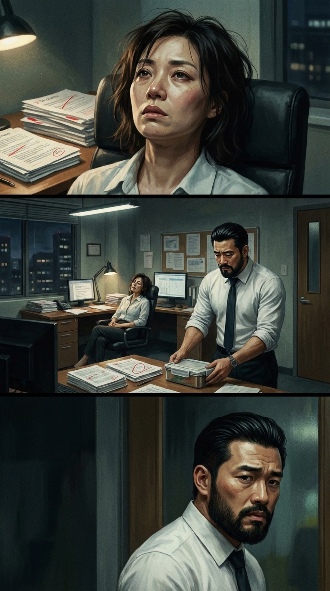
【特写→拉远】林若兰的办公室。她疲惫地靠在椅背上，头发有些凌乱，桌上报告密密麻麻标了红色批注。
江辰："饭放桌上了，记得吃。"
林若兰（没抬头）："嗯。"
林若兰："江辰……"
江辰："嗯？"
林若兰："……没事，你回去吧。"
她欲言又止了。三个月来第一次。她快撑不住了。
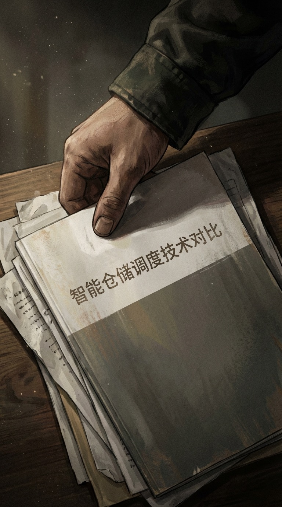
【特写·俯拍】江辰的手将一份打印报告夹在妻子的文件堆里。封面只写了《智能仓储调度技术对比（2026）》，没有署名。
创业者有两种推销方式：硬推和产品说话。我选后者。如果她看了觉得有价值，自然会追问。如果没看……那我再想别的办法。
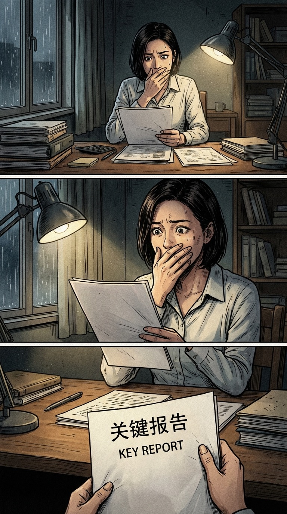
【中景·平拍】夜晚书房。林若兰翻到了那份报告。表情逐渐变化——从困惑到震惊到若有所思。
林若兰（喃喃）："这份分析……张氏方案的每一个技术缺陷都标出来了。调度延迟200ms vs 行业领先15ms？报价对比……虚高300%？！这是谁写的？"
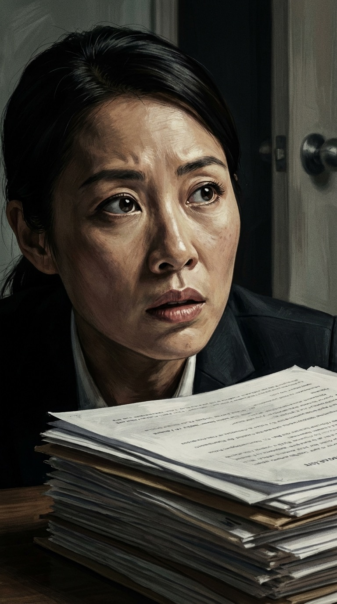
【特写·平拍】林若兰的脸，从文件上抬起头。目光从震惊变为怀疑。
公司里没有人写得出这种水平的分析。这不是传统IT的角度，这是……做过AI的人的思维方式。（停顿）不可能是他……对吧？
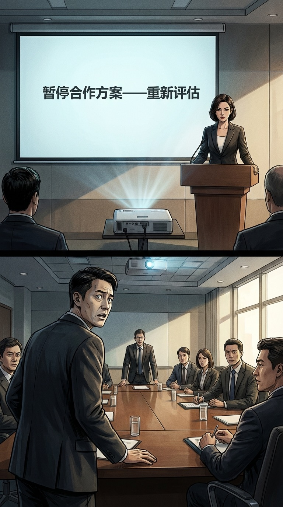
【全景·平拍】第三天，林氏集团会议室。投影上："暂停张氏合作方案——重新评估技术参数"。
林若兰："各位，张氏方案存在严重的技术参数问题。我这里有一份详细的对比分析。"
赵凯（脸色一变）："若兰总，这种专业的事情还是交给技术部门——"
林若兰："技术部门看过了。他们也认为这个方案有问题。"
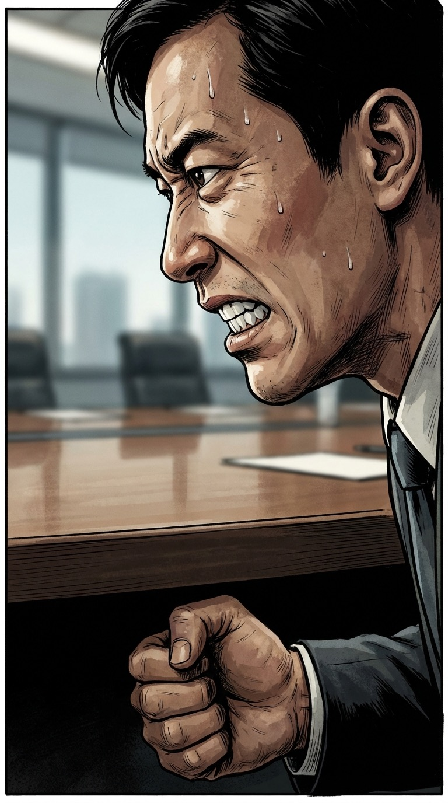
【特写·侧拍】赵凯咬紧牙关，额头微微冒汗，手在桌下握紧。
谁？谁给她的分析报告？技术部那群废物根本看不出来。是外部顾问？还是……
他不知道的是，最危险的"顾问"每天在他眼皮底下送饭。
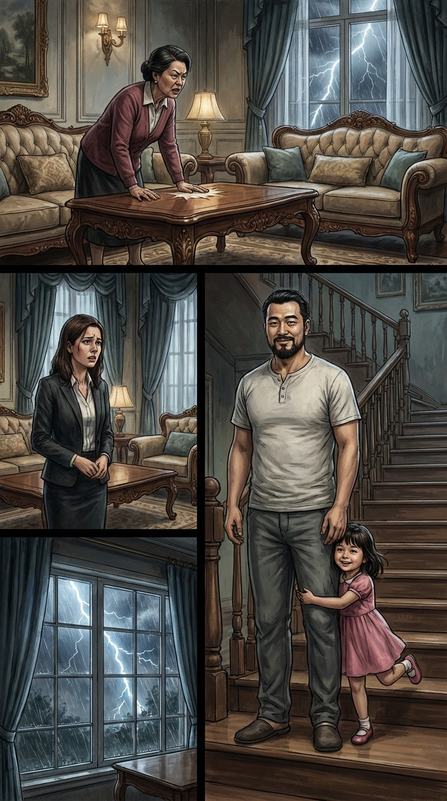
【中景·平拍】客厅。岳母拍桌子。林若兰在旁边为难，江辰平静地站着。
岳母："江辰！你欠了人家一百万？你用我女儿的名义借的？！"
江辰（平静）："妈，这件事我可以解释——"
岳母："不用解释了！我早就说过，你这个人……"
小鱼从楼梯上跑下来，抱住江辰的腿——
小鱼："不许骂爸爸！"
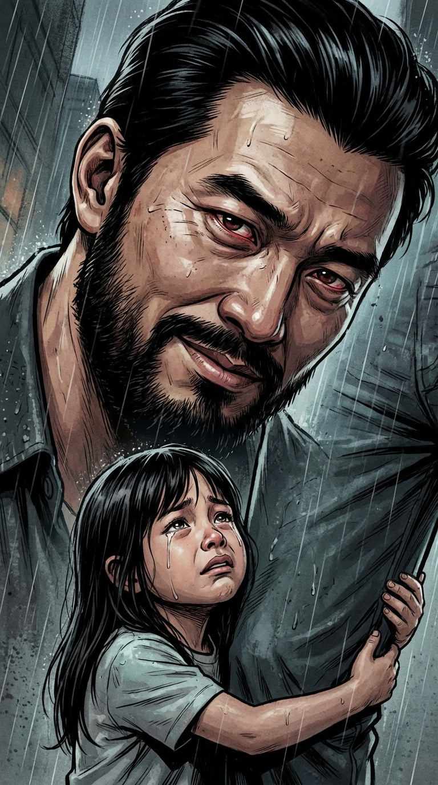
【特写·仰拍】江辰低头看抱着自己腿的小鱼。小鱼哭着仰头看爸爸。他眼眶微红，但嘴角露出一丝笑。
江辰（蹲下，摸小鱼的头）："没事，爸爸没事。"
好了。时间到了。不是为了证明什么，而是——没有人可以在我女儿面前让她害怕。这是底线。
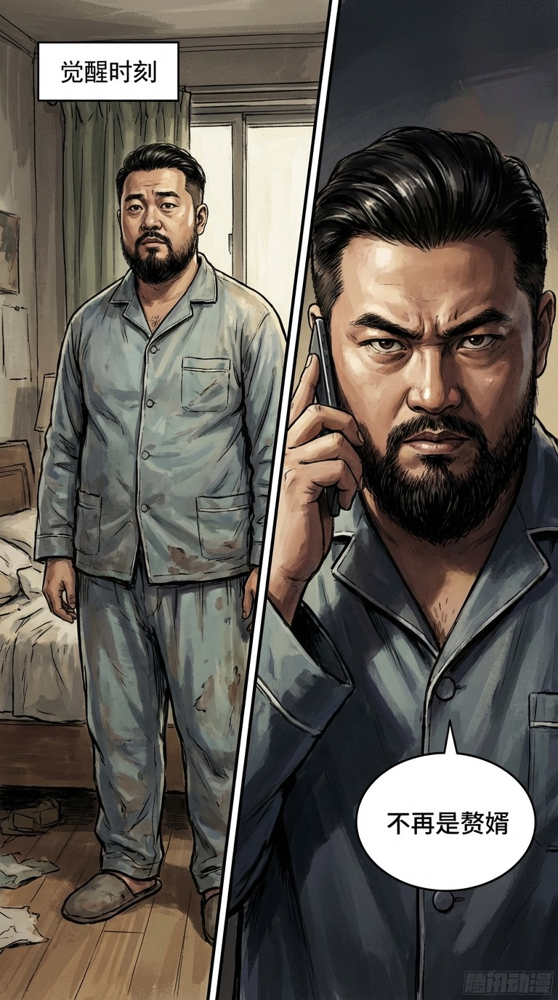
【中景推至特写】江辰站直。目光从温柔变为锋利。他拿出手机，打了一个电话。整个人的气场完全变了——不再是赘婿，而是曾经管理200人的CEO。
江辰（对电话）："老周，把那套系统部署到测试服务器。对，就是那个。"
（挂电话，看向岳母）"妈，给我三天时间。三天后，我给您看一样东西。如果您还觉得我是废物，我自己走。"
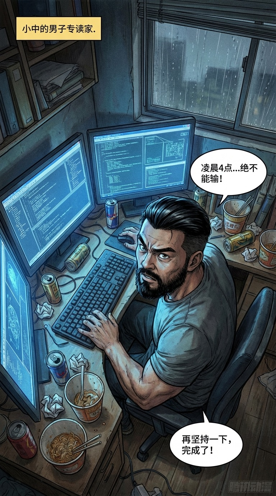
【全景·俯拍】书房（储物间），72小时倒计时。三个显示器同时打开，桌上堆满能量饮料和方便面。
72小时。第一条线：AI仓储调度系统Demo。第二条线：赵凯证据链完善。第三条线：Presentation。创业十年，最紧的deadline也不过如此。不对——比这紧的有一次，demo前两小时服务器崩了。那次也活过来了。
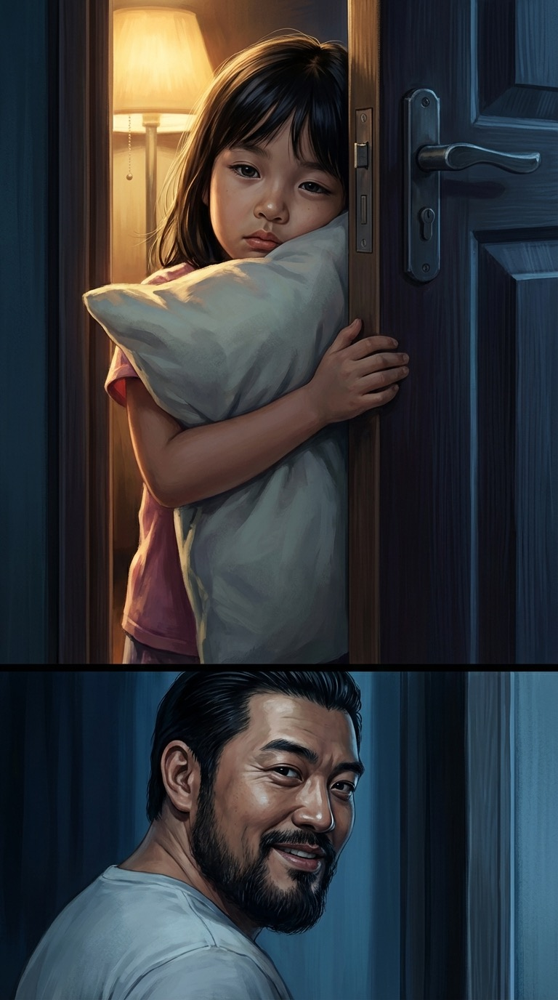
【特写·平拍】深夜，小鱼抱着枕头推开书房门，睡眼朦胧。
小鱼："爸爸还不睡吗？"
江辰："爸爸在做一个很重要的东西。"
小鱼："比煎蛋还重要？"
江辰（笑）："嗯……和煎蛋一样重要。做完了就能让奶奶了解爸爸了。"
小鱼："那我帮你！"
江辰："你的任务是——回去睡觉，明天给爸爸画加油的画。"
小鱼："好！"
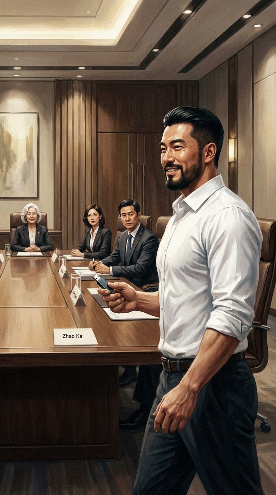
【全景·平拍】第三天。林氏集团大会议室。岳母、林若兰、赵凯、全体高管就座。
江辰穿着整洁的白衬衫——不是西装，创业者的朴素——手里拿着一个U盘。
岳母："三天到了。你说要给我看什么？"
江辰（微笑）："董事长，各位。我给大家看三样东西。第一样，可能能帮林氏节省两千万。第二样，可能会让在座某位非常紧张。第三样——"
（看了一眼赵凯）
"——是关于谁在说我欠钱的真相。"
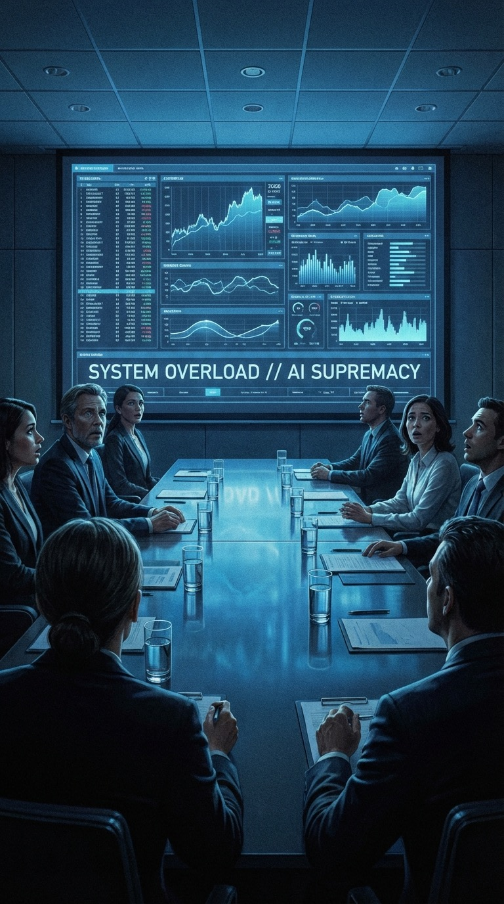
【特写·平拍→推进】投影幕亮起。流畅的AI系统界面，实时数据跳动——
江辰："这是我开发的AI智能仓储调度系统。调度延迟12毫秒，比张氏方案快16倍。部署成本是他们报价的五分之一。"
全场安静。
一个高管："这……这是你做的？"
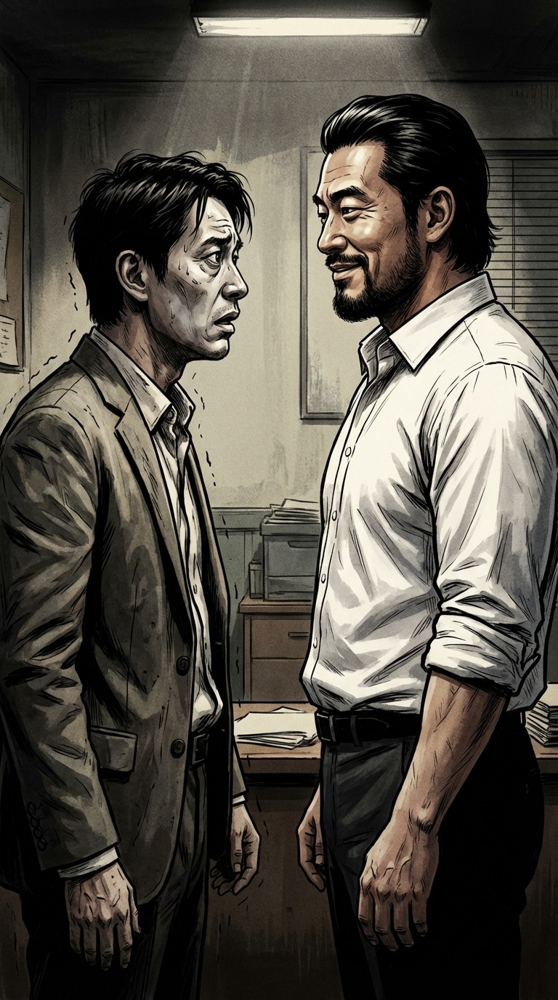
【中景·侧拍】赵凯站起来，声音发抖。
赵凯："这是什么来路不明的系统！江辰，你一个在家煮饭的，怎么可能——"
江辰（平静）："赵总，说到'来路不明'，我这里倒是有一份很有意思的工商登记信息。"
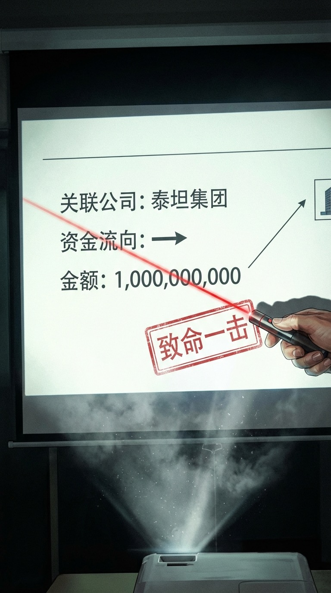
【特写·平拍】投影切换。清晰的证据链图表，资金流向一目了然。
江辰："赵凯持股30%的信诚科技，注册地址与张氏科技相同。过去18个月，张氏每笔合同款的15%通过信诚流入赵凯个人账户。累计金额：四百三十七万六千元。"
全场哗然。
赵凯："你……你黑了我的电脑？！"
江辰（微笑）："赵总，我只是看了公开的工商信息。倒是您这个反应，帮我验证了剩下10%的推测。谢谢。"
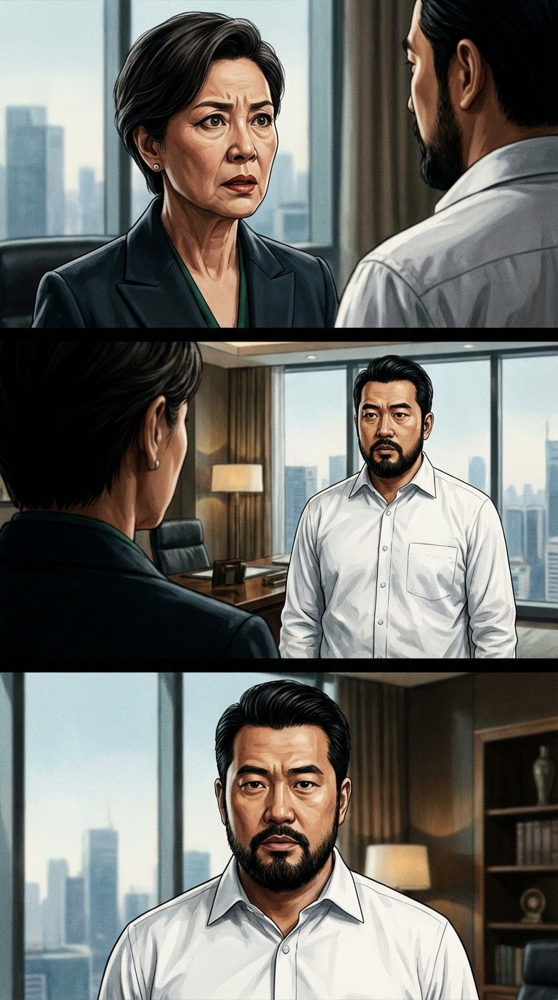
【中景→拉远】岳母的表情——从震怒看赵凯，到转头重新审视江辰。复杂的眼神。
岳母（沉默了十秒）："江辰。你以前……是做什么的？"
江辰："做AI的。公司估值两个亿，被合伙人用了一点不太光明的手段拿走了。"
（停顿）"但算法在脑子里。这个别人拿不走。"
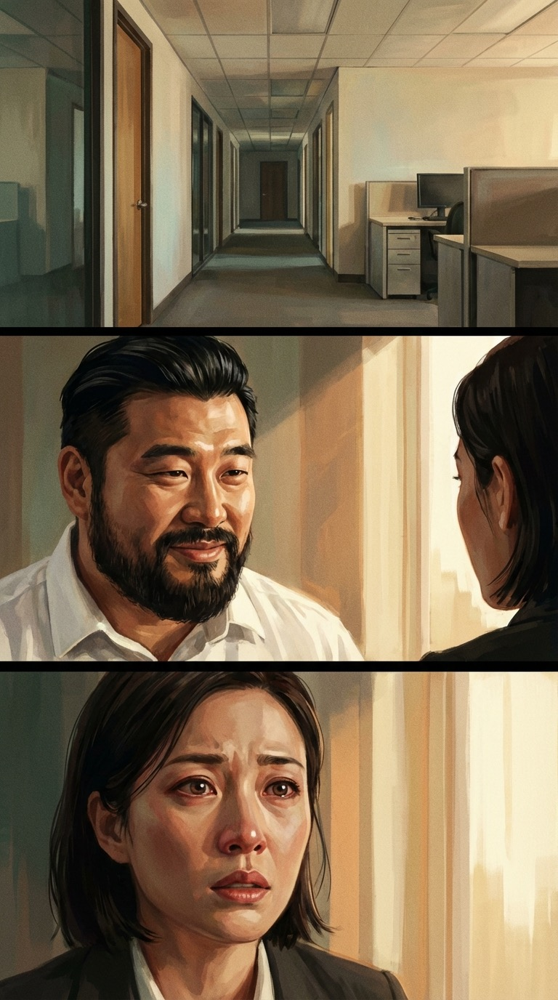
【远景平拍→推至特写】会后，走廊。只剩两人。林若兰的眼眶有些红。
林若兰："那份报告……也是你放的？"
江辰："嗯。"
林若兰："你为什么不早说？"
江辰（笑了）："你会信一个每天做早餐的赘婿说'我能救你公司'吗？"
林若兰（沉默）："……你做的煎蛋确实好吃。"
江辰（笑）："谢谢。这可能是我这三个月最有成就感的评价。"